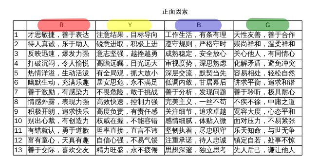
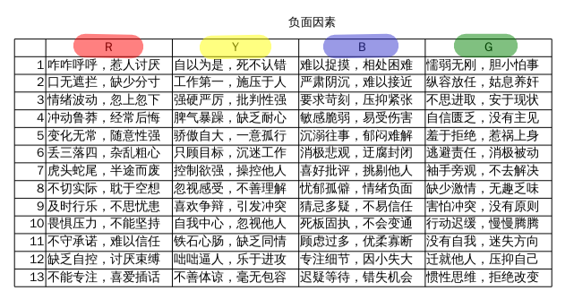

 
R=红桃，Y=黑桃，蓝=方片，绿=草花。 最好采用两幅不同的扑克牌，根据一一对应的关系，将上图中的文字贴在其正面。 例如R1=红桃A，Y13=黑桃K，B8=草花8,如此类推。
～～～～～～以下是调查问卷用户需要注意的地方～～～～～～
过去性格特征部分： 正面 R: 2,4,5,6 Y: 6,11 B: 12 G: 1,13
负面 R: 1,2,3,4,5 Y: 1,4,13 B: 6,10,13 G: 1,1,12,13
现在性格特征部分
正面 R: 2,4,5,6,8 Y: 6,11 B: 12 G: 1,13
负面 R: 1,2,3,4,5,6,7,8,9,10,13 Y: 1,4,8,9,13 B: 4,5,6,10,13 G: 1,4,5,9,11,12,13
～～～～～～～～～～～～请务必按照规格填写～～～～～～